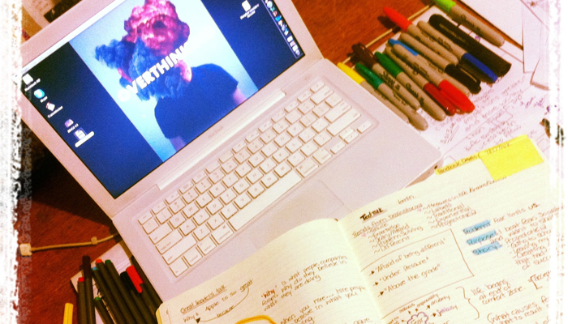

It’s time to work a little harder.
Tuesday, February 28, 2012
Being able to sit back and appreciate all that has happened in the last 5 months is exactly what I needed. Life moves so quickly (especially when you are on the road every Saturday..) it’s difficult to fully process the experiences, lessons learned and perspectives gained when always on the go.
I have been asked quite a bit the last week:
“Did you pick a “real” job yet”
“Where is your last internship..”
“What are you doing now?”
“How long have you been home...”
...and the list goes on.
For the record - I don’t want a “real job”. This project wasn’t designed to get a job... it was created to solve my problem and define a career that has meaningful work and in an industry I want be in.... I wanted to find a career that is a fit for me. And you know what... I might not land my dream job... but I will know the direction I want to go!
So that leads me to today. I have definitely been keeping busy with volunteering, mentoring, and planning the last two weeks... but the exciting news is what I have going on next.
I got back from building a house Mexico and spent a solid week with my family not talking about the project at all. I haven’t seen my family or had the chance to appreciate their company in a long while, so it was nice to be me again.... instead “entrepreneur maeghan” always working and stressing about what had to be done next.
The break gave me the chance to chill out, but also appreciate what has happened and what direction I want to move forward in next. Big things take time and when you move with purpose... the impact and results are much greater.
(twitter shout-out on lesson learned)

So here’s the deal:
I made a hit list of companies I want to work for. It wasn’t about picking the “best-of-the-best” company or, what job will pay me the most.... instead I considered what I learned from the companies apart of ProjectONE12.... and decided what atmosphere I worked best in, what type of work/role I loved and finally, how I could grow in the role. The next step was to determine the best avenue to reach out to those companies and land a position that was either what I am looking for, or gives me opportunity to grow into.
My goal was to make the last internship of the project with a company that would challenge me, but also fit the type of career I want to pursue.
After 3 weeks of planning, pitching and being persistent with a company...... I lined up my last internship today! :)
I am heading out to Montreal to work for Beyond the Rack - a super sweet e-commerce that I have loved for the last 2 years. In 2011, they were ranked as one of the fastest-growing online retailers in the world and have given me the opportunity to work a month for them on a challenging but wicked project :)
So I’m off March 17th and super stoked for what comes next!!
Some advice I have for other students reading this and on the job hunt...
--> Take the time to think about where you want to work and WHY.
If you know the why... when you are in an interview... writing a cover letter... or talking to people who you would like to work for... you can talk about how great the company is.. but also what value you can bring to them. The why is your personal touch and separates you from every other person trying out for the job. So always find that why!!!
--> Be persistent
If you really want it.... don’t give up. Even if you go a different direction for a while.. to get experience... skills what ever... go back and try again if you still want to do it!! Persistence is admirable because it shows that you stick to your guns and are serious about what you want to achieve. Its stressful... believe me.. but the result is beyond worth it.
--> Don’t let fear hold you back
Fear has been my BFF for the last 5 months.... and seriously... I wouldn’t have been able to do some cool things... if I hadn’t face my fears. Even if you fail the first time.. second time...... twentieth time... keep with it if you want to achieve it. It just means you have to work a little bit harder. Once you face your fear... its surprising... you gain the courage to keep moving forward and cool things start to happen.
That’s it for me... for now :) more exciting stuff coming in the next few weeks and I am stoked to keep you posted.
I appreciate all the support, kind words and comments. It really has been a special 5 months and these companies have taught me so much.... I feel so lucky to be able to share this experience with you.
Thank you for letting me be honest, and sharing these moments that will stick with me for the rest of my life. :) appreciate you.
Much <3
Maeghan
